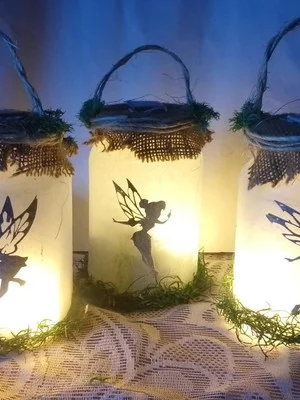
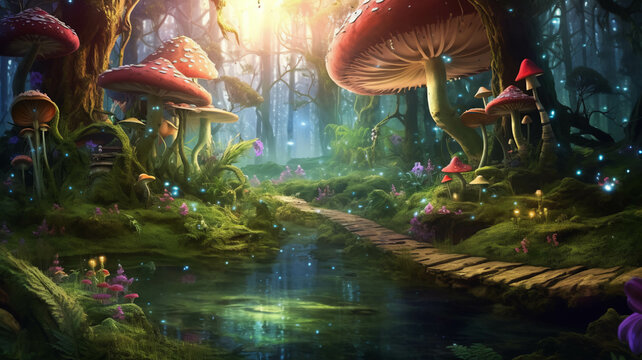

Em certo dia, uma fada é sequestrada, suas amigas me deixaram dicas para encontra-la e eu decidi arriscar..!
Sua jornada começa na floresta encantada, seguindo uma trilha de diamante ao amanhecer e no final da trilha encontrará sua primeira pista.

Você decidiu continuar com sua jornada, muito bem! no final da trilha tinha a seguinte frase: quanto mais perto, mais longe..
você desvendou a charada e viu que a fadinha estava presa em uma gaiola perto da trilha, então você soltou ela e decidiu mostrar o caminho de volta, mas estava intrigada pois queria saber, quem fez isso com ela..?

isso só na parte 2..🤪